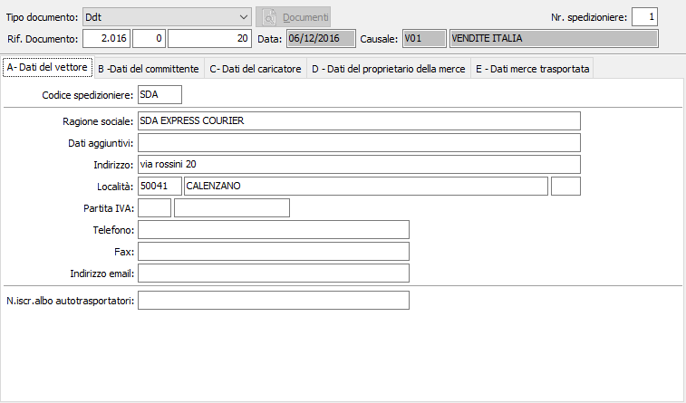
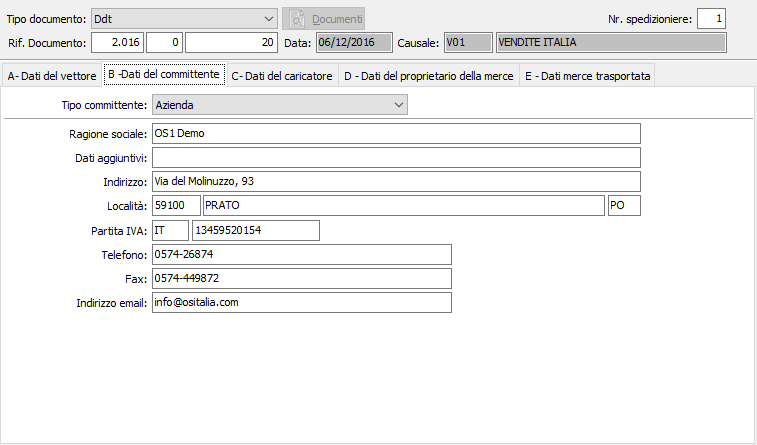
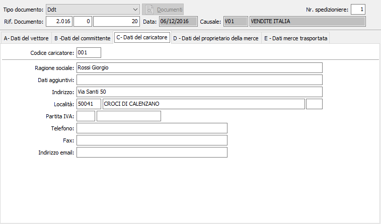
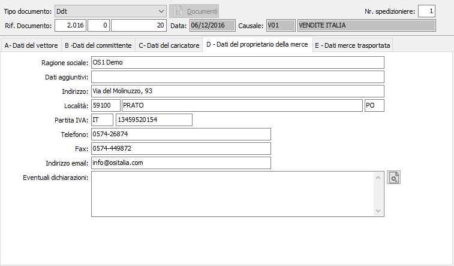
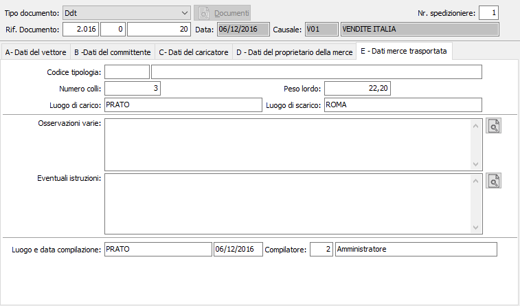

Gestione schede di trasporto
Il programma gestione schede permette la manutenzione delle schede esistenti, l’inserimento di nuove schede di trasporto a fronte di Ddt che hanno già generato scheda, l’inserimento di nuove schede a fronte di documenti che prevedono tale gestione; sul primo campo del riferimento al documento è presente lo zoom (F9) per la ricerca delle schede presenti in archivio. Attraverso il bottone Documenti è possibile, in fase di inserimento, visualizzare i documenti per cui ancora non sono state inserite schede di trasporto e selezionandolo acquisirne i dati direttamente nella scheda che si sta inserendo
La scheda di trasporto viene richiamata automaticamente dalle seguenti procedure:
Emissione e manutenzione Ddt clienti;
Emissione e manutenzione Ddt fornitori (modulo vendite);
Emissione e manutenzione fatture accompagnatorie;
Emissione e manutenzione Ddt terzisti (modulo del conto lavoro);
Generazione documenti di spedizione;
Generazione documenti da liste di prelievo;
Generazione Ddt terzisti.
Le schede vengono generate per i documenti emessi con causali che prevedono il caricamento dei dati, presenti nella tabella configurazioni causali, o in base a quello che è configurato per il tipo documento specifico o per tutti i tipi documento.
Un ulteriore controllo viene effettuato sui dati di spedizione, le schede saranno generate per i documenti che prevedono la spedizione tramite vettore e in cui sia presente il primo spedizioniere.
Alcuni dati vengono proposti in base a quanto inserito nell’apposita configurazione, altri dati vengono letti direttamente dal documento, come ad esempio il peso, i colli, lo spedizioniere, etc; tutti i dati sono memorizzati sulla scheda di trasporto e sono quindi modificabili.
è possibile inserire più di una scheda per documento; per fare questo dopo aver scelto l’inserimento di una nuova scheda deve essere selezionato il tipo documento desiderato, inserito manualmente un valore maggiore di 1 sul campo “Nr. spedizioniere” e il riferimento al documento. Se viene inserito il valore 2 nel campo “Nr. Spedizioniere”, la scheda viene generata per il secondo spedizioniere, con i dati compilati come visto per la generazione da documento.
Nella linguetta “Dati vettore” vengono riportati i dati dello spedizioniere; è possibile variare il codice spedizioniere riportando i dati del nuovo codice o modificare i singoli campi, quali la ragione sociale, i dati aggiuntivi, l’indirizzo, etc.

Nella linguetta “Dati committente” vengono impostati i dati in base al valore di configurazione “Tipo committente default” che può essere “azienda” o “altro”, nella scheda è possibile inserire anche il valore cliente, riportando i dati del cliente di fatturazione o intestatario del documento.

Nella linguetta “Dati del caricatore” vengono impostati i dati del codice del caricatore presente in configurazione; è possibile modificare il codice del caricatore riportando i dati del nuovo codice o variare i singoli campi.

Nella linguetta “Dati del proprietario della merce” vengono impostati i campi in base a quanto definito sul porto presente sul documento, nel caso di Ddt del conto lavoro i dati impostati sono sempre quelli dell’azienda.

Nell’ultima linguetta sono presenti i dati della merce, vediamo come vengono proposti i vari campi:

Codice tipologia: viene proposto il valore impostato in configurazione;
Numero colli e Peso lordo: valori presenti nel riepilogo totali del documento;
Luogo di carico: città del luogo di partenza impostato sulla causale del documento, se presente, altrimenti viene riportata la città dell’azienda;
Luogo di scarico: città del magazzino di arrivo, se presente, oppure città del destinatario di consegna merce del documento, se presente, altrimenti viene riportata la città del cliente;
Osservazioni varie ed Eventuali istruzioni: campi memo a cura dell'utente;
Luogo e data compilazione: città dell’azienda e data di emissione della scheda di trasporto;
Compilatore: utente di OS1.